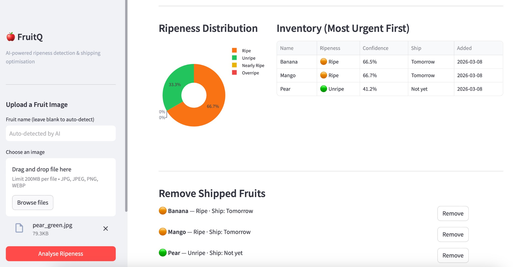

FruitQ
Upload a photo of a fruit → AI detects ripeness → Most ripe ships first.
1. Project Overview
FruitQ is an end-to-end AI system that detects the ripeness of fruits from photos and automatically prioritises them for shipping. The goal is to reduce food waste by ensuring the most ripe fruits ship first before they spoil.
How it works
- A user uploads a photo of a fruit via the dashboard or API
- A CLIP vision model identifies the fruit type (e.g. banana, mango, apple)
- The same model classifies ripeness into one of four categories
- The fruit is added to an inventory ranked by urgency
- The most ripe fruits are flagged for immediate shipping
| Label | Priority | Action |
|---|---|---|
| Overripe | Today | Ship immediately |
| Ripe | Tomorrow | Ship next day |
| Nearly Ripe | In 3 days | Monitor |
| Unripe | Not yet | Keep in storage |
2. Tech Stack
| Layer | Technology | Purpose |
|---|---|---|
| Language | Python 3.11 | Main language |
| Vision Model | CLIP (Hugging Face) | Fruit ID + ripeness classification |
| REST API | FastAPI + Uvicorn | Backend endpoints |
| Dashboard | Streamlit + Plotly | Interactive web UI |
| Tracking | MLflow | Experiment & prediction logging |
| Container | Docker | Packaging & portability |
| CI/CD | GitHub Actions | Automated test, build, deploy |
| Cloud | Terraform | Azure infrastructure as code |
| Cloud | Azure Container Instances | Production hosting |
Total cost: $0 — all tools are free or have a free tier.
3. Architecture
The system follows a clean separation between the AI model, the API layer, the inventory logic, and the presentation layer. Each component can be developed, tested, and scaled independently.
- User (Browser) → Streamlit Dashboard (port 8501) — POST /predict (image upload), GET /inventory
- FastAPI Server (port 8000) — model.py (CLIP), inventory.py (ranked inventory), mlflow_tracking
- Docker Container → Azure Container Instances
- GitHub Actions CI/CD → GHCR (image registry)
Data flow: Image uploaded via Streamlit or API → FastAPI passes to CLIP → two zero-shot passes (fruit ID, 25 types; ripeness, 4 levels) → result stored in inventory (sorted by urgency) → prediction logged to MLflow → dashboard refreshes.
4. Vision Model — CLIP
Model: openai/clip-vit-base-patch32. CLIP does zero-shot classification: no fine-tuning or training data needed. One model handles both fruit identification and ripeness.
Step 1 — Fruit identification: Image + 25 candidate labels (e.g. 'a photo of a banana', 'a photo of a mango') → returns most likely fruit and confidence.
Step 2 — Ripeness: Same model with four labels: "unripe green fruit", "nearly ripe fruit", "ripe ready-to-eat fruit", "overripe spoiled fruit". Highest score = ripeness and shipping priority.
Why CLIP: No training data; single model for ID + ripeness; runs on CPU; free via Hugging Face; ~340 MB, cached after first use.
5. Ripeness Ranking & Inventory
Thread-safe, in-memory list of analysed fruits, re-sorted so the most urgent appear first. Ranks: Unripe 0, Nearly Ripe 1, Ripe 2, Overripe 3. Key operations: add(), get_all(), remove(), summary(), clear().
6. REST API (FastAPI)
| Method | Path | Description |
|---|---|---|
| POST | /predict | Upload image → ripeness + add to inventory |
| GET | /inventory | List all fruits ranked by ripeness |
| GET | /inventory/summary | Counts by category + ship-today list |
| DELETE | /inventory/{id} | Remove a fruit after shipping |
| GET | /health | Health check |
Example response from POST /predict:
{
"fruit_name": "Banana",
"detected_fruit": "Banana",
"fruit_confidence": 92.3,
"ripeness_label": "Ripe",
"confidence": 84.5,
"shipping_priority": "Tomorrow"
}
7. Dashboard UI (Streamlit)

Sidebar: image upload (drag-and-drop), optional fruit name override. Auto-detection, result display (ripeness, confidence, shipping priority). KPI row: total fruits, ship-today, ripe, unripe. Pie chart: ripeness distribution (Plotly). Inventory table: ranked by urgency, colour-coded labels, ship-today alerts, remove-on-ship buttons.
8. MLflow, Docker, CI/CD & Deployment
MLflow: Every prediction logged (params, metrics, tags). Low-confidence (< 60%) runs tagged with alert: low_confidence.
Docker: Multi-stage build; docker-compose runs API (8000), dashboard (8501), MLflow (5000).
CI/CD (GitHub Actions): Test (pytest) → Build & push image to GHCR → Deploy with Terraform to Azure (main only).
Azure (Terraform): Resource group, Log Analytics, Container Groups for API and Dashboard. Secrets: ARM_CLIENT_ID, ARM_CLIENT_SECRET, ARM_SUBSCRIPTION_ID, ARM_TENANT_ID.
9. How to Run
Local:
git clone https://github.com/wasimahmadpk/fruitesQ.git cd fruitesQ pip install -r requirements.txt uvicorn src.api:app --reload --port 8000 streamlit run src/dashboard.py mlflow ui --port 5000 # optional
Docker: docker compose up. Tests: pytest tests/ -v.
Access: API Docs (Swagger) localhost:8000/docs · Dashboard localhost:8501 · MLflow localhost:5000 · Health localhost:8000/health.
10. Project Structure
src/: api.py, model.py, inventory.py, dashboard.py · tests/: test_api.py, test_inventory.py · .github/workflows/ci.yml · terraform/main.tf · Dockerfile, docker-compose.yml, requirements.txt, README.md.